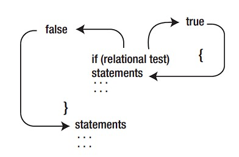
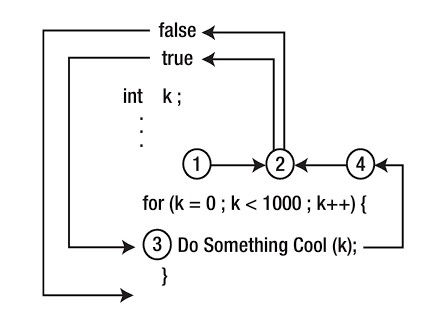
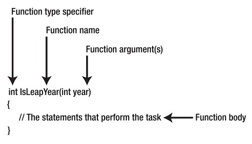

What’s left in your head from C?¶
The C programming language began its march to become formally defined by the American National Standard Institute (ANSI) with the formation of the X3J11 committee in 1983. The committee’s work was completed and the standard passed in 1989. Since then, the language is often referred to an “ANSI C”. The standard is also recognized by the International Organization for Standardization (ISO), too, so sometimes you will hear it referred to as “ISO C”. For all practical purposes, ANSI C and ISO C are the same. In a world that is overly hung up on political correctness, you will also hear both versions called “standard C.” The C you are about to learn is not standard C. Rather, you will be learning a robust subset of standard C. A few standard C features are missing. But the absence of those features is not a crippling blow by any means. You will soon discover that the subset version of standard C, which we will call Arduino C, is more than able to perform just about any task you can throw at it. The missing features can easily be worked around, albeit sometimes in a less elegant manner.
Variable Names in C¶
There are three general rules for naming variables or functions in C: Valid variable names may contain: 1. Characters a through z and A through Z 2. The underscore character (_) 3. Digit characters 0 through 9, provided they are not used as the first character in the name. Just about everything else is not acceptable, including C keywords. That also means that punctuation, and other special non-printing characters are not allowed either. Valid variable names might include:
Using the same rules, the following would not be valid names:Given these limits, how does one create a “good” variable name? As a general rule, I like variable names that are long enough to give me a clue as to what they do in a program but short enough that I don’t get tired of typing their name. Another convention a lot of programmers used is a variant of what’s called camel notation. Using this notation, variable names begin with a lowercase letter with each subword capitalized. Examples using this style might be:
Warning
Keep in mind that C is case sensitive, which means that myData and MyData are two different
variables.
Expressions¶
An expression is created by combining operands and operators. Simply stated, an operand is typically a piece of data that is acted on by an operator. An operator is often a mathematical or logical action that is performed on one or more operands.
In each of these expressions, there are two operands and one operator. That’s why you will often hear such expressions referred to as expressions that use a binary operator. Binary operators (e.g., +, –, and <) always use two operands. Another important thing to keep in mind is that any expression will ultimately resolve to a value. (There are also unary operators that have only one operand and ternary operators that require three operands.) However, the binary operators are the most common in C.
Note
In programming languages, logic true and logic false expressions do resolve
to a value. In most languages, logic true resolves to a non-zero value (e.g., –1), and logic false is zero. Relational expressions are designed to resolve to a logic true or false state, so they ultimately do resolve to a value that can be used in a program.
All of the operators in the table are binary operators and require two operands.
| Operator | Interpretation |
|---|---|
| > | Greater than |
| >= | Greater than or equal to |
| < | Less than |
| <= | Less than or equal to |
| == | Equal to |
| != | Not equal to |
Note
The result of all relational operations is either logic true (non-zero) or logic false (zero).
Statements¶
A statement is a complete C instruction for the computer. All C statements end with a semicolon (;). The following are examples of C statements:
In the first example, the equal sign (=) is called the assignment operator and is used to “assign” the
value on the right side of the equal sign to the operand on the left side of the assignment operator.
Decision Making¶
As you might guess, a decision is often based on comparing the state of two or more pieces of data. You make such decisions all the time, probably without thinking much about the process that is involved in making the decision. The phone rings and you get up to answer it. Implicitly, you make a decision whether to answer the call or not. Further, that decision involved comparing the expected benefits from answering the call (e.g., it might be someone you want to talk with) versus the expected costs of not answering the call (i.e., I may miss out on talking to someone important). Some decisions are better than others. Indeed, the definition of a dilemma is when you have two or more choices and they are all bad.
The if Statement¶
In a computer program, unless the central processing unit (CPU) is told to do otherwise, the CPU processes the source code program instructions in a linear, top-to-bottom manner. That is, program execution starts at whatever is designated as the starting point for the program and plows through the source code from that point to the next statement until all of the statements have been processed.
he syntax for an if statement is:
if (expression1 is logic true) {
// execute this if statement block if true
}
// statements following the if statement block
int b = 10;
// some more program statement...
if (b < 20) {
b = doSomethingNeat();
}
doSomethingElse(b);

If the if statement block consists of a single program statement, then the braces defining the statement block may be omitted.
Caution
We used a single equal sign for the relational expression rather than the proper "is equal to" operator (==). This means the code performs an assignment statement, not a relational test.
The if-else Statement¶
provides another form of the simple if statement called the if-else statement. The syntax for the if-else statement is:
if (expression evaluates to logic true) {
// perform this statement block if logic true
} else {
// perform this statement block otherwise
}
Just because you have a program working doesn’t mean it is the most efficient way to write the code.
Tip
There are two flavors for the increment/decrement operator:
- Pre-increment (
++counter): The value of the variable is fetched, incremented, and then used in the expression. - Post-increment (
counter++): The value of the variable is fetched and used in the expression, and then incremented afterward.
Notice that ++ appears before the variable name for pre-increment, and after the variable name for post-increment.
The switch Statement¶
switch (expression1) { // opening brace for switch statement block
case 1:
// statements to execute when expression1 is 1
break;
case 2:
// statements to execute when expression1 is 2
break;
case 3:
// statements to execute when expression1 is 3
break;
// more case statements as needed
default:
// statements to execute if expression1 doesn't have a "case value"
break;
} // close brace for switch statement block
// This is the next statement after the switch
The expression1 must evaluate to an integral data type. That is, expression1 could be a byte, char, int, or long (including their unsigned counterparts)—it cannot be a floating point type (float or double) nor can it be a reference data type (e.g., string or String). Although Arduino C also accepts a Boolean data type for expression1, that seems suspect to me, and I wouldn’t suggest using it. After all, a Boolean is either true or false, so an if-else statement block would work.
Note
If you forget the break statement for a given case, then program execution falls through to the next case statement. This can be a potential source of errors in your programs. However, there are also times when two case values may need to execute the same program statements.
All programming languages, from Ada to ZPL, are built from four basic elements:
The last element, function blocks, may be called different names in different languages, such as “methods” in C++, C#, and Java; “procedures” in Pascal; “subroutines” in Basic or Fortran; or perhaps some more exotic name in lesser-known languages. Regardless of their name, function blocks tend to be blocks of code designed to address some narrowly-defined task. Programs are little more than arrangements of these elements in a way that solves a problem.
Operator Precedence in C (Highest to Lowest)¶
| Precedence | Operators | Description | Associativity |
|---|---|---|---|
| 1 | () [] . -> ++ -- (postfix) |
Function call, array subscript, member access, post-increment/decrement | Left to right |
| 2 | ++ -- (prefix) + - ! ~ * & sizeof (type) |
Prefix inc/dec, unary plus/minus, logical NOT, bitwise NOT, dereference, address-of, sizeof, type cast | Right to left |
| 3 | * / % |
Multiplication, division, modulo (remainder) | Left to right |
| 4 | + - |
Addition, subtraction | Left to right |
| 5 | << >> |
Bitwise left shift, bitwise right shift | Left to right |
| 6 | < <= > >= |
Relational operators (less than, less than or equal, greater than, greater than or equal) | Left to right |
| 7 | == != |
Equality (equal to, not equal to) | Left to right |
| 8 | & |
Bitwise AND | Left to right |
| 9 | ^ |
Bitwise XOR (exclusive OR) | Left to right |
| 10 | \| |
Bitwise OR (inclusive OR) | Left to right |
| 11 | && |
Logical AND | Left to right |
| 12 | \|\| |
Logical OR | Left to right |
| 13 | ?: |
Ternary conditional operator | Right to left |
| 14 | = += -= *= /= %= &= ^= \|= <<= >>= |
Assignment and compound assignment operators | Right to left |
| 15 | , |
Comma operator | Left to right |
What is the difference between
&and&&?
Program Loops¶
One of the things computers can do more efficiently than humans is repetitive tasks.Computers never get bored, so they are great at performing repetitive tasks. Unless a mc loses power or a component fails, they will loop forever, unless instructed to do otherwise.
For Loops¶
The general syntax structure of a for loop is as follows:
for (expression1; expression2; expression3) {
// for loop statement body
}
// the first statement following the for loop structure
In the loop structure, expression1 usually initializes the variable that controls the loop. However,
because expression1 can have a comma-separated list of subexpressions, we can’t say expression1 always
initializes a loop control variable. (You will see an example of this in the next paragraph.) expression2
performs some form of logical test to determine if another pass through the loop body is warranted.
expression3 is usually responsible for changing the state of the loop control variable but is not required to
do so. (In fact, you could move expression3 into the loop body if you wanted to, but that’s not the
conventional style.)

Note that expression1 can
have a comma-delimited list of subexpressions. For example, you may see something like:
Usually, expression3 is used to change the state of the variable that controls the loop iterations,
variable k in our example. You can have a comma-delimited list of subexpressions, as in:
While Loop¶
The syntax of the while loop is:
Notice that only expression2, the expression that tests whether another pass through the loop
statement body is needed, appears as an integral part of the loop structure’s syntax.
Example:
int k;
// some additional statements
k = 0;
// This is expression1
while (k < 1000) {
// This is expression3
}
// This is expression2DoSomethingCool();k++;
// End of the while loop
Caution
After each pass through the loop, the expression controlling the loop must change state. If the control
variable did not change state during the processing of the loop statements, the loop will execute forever.
do-while Loop¶
The syntax is:
with ado-while loop, you are guaranteed
that the loop body statements are executed at least one time.
The break and continue Keywords¶
The break and continue statements are often used within loops structures. Simply stated, a break
statement sends program control to the statement that immediately follows the closing brace of the loop
body. (In a do-while, control is sent to the first statement following the while statement.) The continue
statement immediately sends program control to the test conditions of the loop (i.e., expression2) for this
pass through the loop. That is, any statements contained in the loop following the continue statement are
ignored when the continue statement executes.
Functions¶
A function is a body of code designed to solve a particular task. You should think of a function as a black box, the contents of which are unknown to you. All you care about is that it addresses some task to be accomplished in your program. Hundreds of functions are available for you to use in various function libraries. A function library is simply a collection of functions that share a common area of interest
Let’s take a look at the general structure of a C function:

-
the purpose of a function type specifier is to define the type of data that is returned when the function is called. The type of data returned from the function can be whatever data type you wish (e.g., double, long, char, byte, etc.). If no value is returned from the function, then the type specifier must use the void keyword.
-
Function names follow the same naming rules you use for variable names. Most library functions start with a lowercase letter, although that is not a requirement of the language.
-
After the function name comes an opening parenthesis followed by zero or more function arguments. Function arguments are used to pass data to the function that it may need to perform its task. Multiple function arguments are delineated with commas between arguments.
Tip
The choice of a function name does matter. Good function names tell you what the function does but
not necessarily how it does it. A function should be a black box in that it tells you what it does but provides no details on its implementation. specific task, specific tool
Function Signature¶
A function signature is comprised of everything following the type specifier through the closing parenthesis of the argument list. For example, for the VolumeOfCube() function, the function signature is:
overloaded functions¶
Anytime a function has two or more different signatures, it is called an overloaded function. (Technically, the C programming language does not allow overloaded functions, whereas C++ does. Because the Arduino C compiler is built on the Gnu C++ compiler, Arduino C does permit overloaded functions. This is a good thing!) Often, two signatures are used when a default value doesn’t solve the task at hand.
What problem arises if we define a function with the same signature as one of the existing functions in C?
Documentation¶
What Makes a “Good” Function¶
- Functions Use Task-Oriented Names
- The Function Should Be Cohesive
- Functions Should Avoid Coupling
After you write this function, handing the function to another programmer for use of your function should prompt only three questions from them: - What task does this function perform? - What data do I need to send to the function? - What data do I get back from it?
If you have done your design work well, the function name answers the first question, the argument list answers the second question, and the function type specifier answers the third question.
Comments¶
Comments should be used any time you wish to document what a program is doing or about to do. Reading code isn’t always easy and it might be hard for the reader to figure out what’s going on in a particular section of code. In such cases, a comment may make it easier for someone to decipher what the code is supposed to do. For example, if you have a black box function that implements some really scary mathematical equation, then you might add a comment to explain what is going on. If the function is really complex, then it is not uncommon to put a multiline reference comment into the code that has a book and page number (or perhaps an Internet URL address) where the reader can go for further information. At first blush, it may seem that comments are directed to someone other than the person who actually wrote the code. Frequently, that is true, especially if you write code in a commercial environment with other programmers who may have to work with your code. However, even if you are the only person who will ever see the code, you would be amazed how a piece of code that was so easy to understand this morning may as well be written in Sanskrit six months from now. Comments should be used to help the person reading the code—whomever that may be. So, the question still remains: When do you add comments to a program? Too few comments often makes the code difficult to understand. There are simply not enough comments to be helpful to your understanding of the code. However, too many comments can have the same effect because they “get in the way” of understanding the code. Comments are clutter if they don’t contribute any real benefit to understanding the code.
Single-Line Comments¶
Single-line comments begin with a pair of slash (//) characters. There can be no spaces between the two
slashes. (Otherwise the compiler might think it was looking at the division operator.) Upon seeing the two
slash characters, the compiler knows that what follows from the two slashes to the end of the current line is
a program comment and does not need to be compiled. As such, comments that begin with // must
appear on the same line as the two slash characters. If you fold a comment to the next line without the
leading slashes, then it will be seen as a syntax error by the compiler.
Again, an example of this type of comment is:
Multiline Comments¶
Multiline comments begin with a slash-asterisk pair (/*) and end with an asterisk-slash pair (*/). There are
no spaces between the two characters pairs. Everything in between these two character pairs is treated as a
comment and is ignored by the compiler. Unlike single line comments, multiline comments can span
multiple lines. You can see an example of a multiline comment at the top of Listing 2-1.
Note that you could write the multi-line comment at the top of Listing 2-1 as:
/* Blink
Turns on an LED on for 1 second, then off for 1 second, repeatedly.
/* This example code is in the public domain.
```
and the program would behave exactly the same. However, multiline comments are useful for long
comments that span multiple lines because they take fewer keystrokes to implement. The compiler could
care less which you use. The important thing to remember is that comments invoke no penalty in terms of
memory space or the performance of the program, so there is no reason not to use them as needed.
There are no hard-and-fast rules for commenting the program source code. My preference is to put a
multiline comment before most function blocks or any line (or lines) of code that does something unusual
or “tricky.” For example,
``` C
x = y / 2.0;
x = y * .5; // Divide the number in half
[!TIP] Performance Optimization for Arduino (Multiplication vs. Division)
Method 1: Shift Bits for Powers of 2 - Slow:
int y = x / 4;- Fast:int y = x / 4;- Fast Pro Max:int y = x >> 2;(3-4x faster) - Note: Only use for division/multiplication by 2, 4, 8, 16, 32... (powers of 2) - Warning: Be careful with negative numbers!Method 2: Use Constants at Compile Time - Slow:
float y = x / 3.0;- Fast:const float factor = 1.0 / 3.0;thenfloat y = x * factor;- Why: The division happens once at compile time, not repeatedly at runtimeMethod 3: Avoid Floating Point Operations - Slow:
float result = (sensorValue * 3.14) / 2.73;- Fast:int result = (sensorValue * 314) / 273;(no decimals!) - Why Integer math is 5-10x faster than floating point on Arduino - Remember: Multiplication (*) is always faster than division (/) - replace/with*whenever possible
The Five Program Steps¶
Every program you can think of can be reduced to five basic program elements, or steps. When you first start to design a program, you should think of that program in terms of the following Five Program Steps.
- Initialization step
- Input step
- Process step
- Output step
- Terminate step
An algorithm is nothing more than a formal statement of how a given set of inputs are manipulated to produce a desired result. An algorithm is like a recipe or a set of blueprints: They describe what you need to do to reach a desired goal or endpoint. And so it is with programming: The Five Program Steps can be used to formulate a plan for solving a give programming problem. Although algorithms are more closely tied to Steps 2 and 3 (i.e., Input and Processing), the Five Program Steps should help you formulate an algorithm to solve whatever task is at hand.[Beginning C for Arduino].
Challenges¶
Problem 1 ⭐⭐¶
Write a function that takes $n$ and calculates the result of the following series:
$$ S = 1! - 2! + 3! - 4! + ... \pm n $$
Problem 2 ⭐⭐⭐¶
A number is related to numbers that have a property between their own digits and the power of their number of digits. We call a number an Armstrong number if it is equal to the sum of its digits raised to the power of the number of its digits. For example, the number 153 is a 3-digit number, and we have:
$$ 1^3 + 5^3 + 3^3 = 1 + 125 + 27 = 153 $$
Or more generally for any number $n$:
$$ n = \sum (i)^d $$
where $i$ is each digit of $n$ and $d$ is the number of digits in $n$.
Write a function that determines if a number is an Armstrong number or not.
Problem 3 ⭐⭐⭐¶
Goldbach's Conjecture is one of the most famous unsolved problems in number theory. It was proposed by Christian Goldbach in a letter to Leonhard Euler in 1742.
The conjecture states that every even integer greater than 2 can be expressed as the sum of two prime numbers. For example, we can write 10 as the sum of two primes: $3 + 7 = 10$ or $5 + 5 = 10$.
While the conjecture has been computationally verified for very large numbers (up to $4 \times 10^{18}$), it has not yet been mathematically proven.
Write a program that takes an even number greater than 2 as input and outputs two prime numbers that sum up to it.
Problem 4 ⭐¶
Write a function that checks if a given number is a prime number or not. A prime number is defined as a number that is only divisible by one and itself.
Problem 5 ⭐¶
Write a function that checks if a given number is a perfect number or not. A perfect number is defined as a number whose sum of its proper divisors (divisors excluding the number itself) is equal to the number itself.
Problem 6 ⭐⭐⭐¶
For different values of m, calculate the result of the following expressions and compare the result with the number $π$.
$$ a = \sqrt{12} \sum_{m=0}^{m} \frac{(-1/3)^m}{2m+1} $$
$$ b = 2 \prod_{m=1}^{m} \frac{(2m)^2}{(2m)^2 - 1} $$
Problem 7¶
Find the smallest integer that is divisible by 11 and whose square root is greater than 132. (The program should start from a number and, as soon as the desired number is found, print an appropriate message.)
Problem 8¶
To calculate the sine of an angle, the Taylor series expansion can be used as shown below. The more terms are considered, the better the approximation will be.
$$ \sin(x) = x - \frac{x^3}{3!} + \frac{x^5}{5!} - \frac{x^7}{7!} + \dots = \sum_{n=0}^\infty \frac{(-1)^n}{(2n+1)!}x^{2n+1} $$
To determine how many terms of the above series are needed to obtain a reasonably good approximation, we can use a relation to calculate the error (E) between the actual sine of an angle and the sine estimated by the Taylor series as follows:
$$ E = \left| \frac{S_n - S_{n-1}}{S_{n-1}} \right| $$
In this relation, ( S_n ) represents the sum of the Taylor series up to the nth term, and ( a_n ) is the nth term. Use this relation to compute the sine of an angle using both the exact method and the approximate method. The approximate result is considered acceptable when its difference from the exact value is less than or equal to one millionth. Test the program for several arbitrary angles.